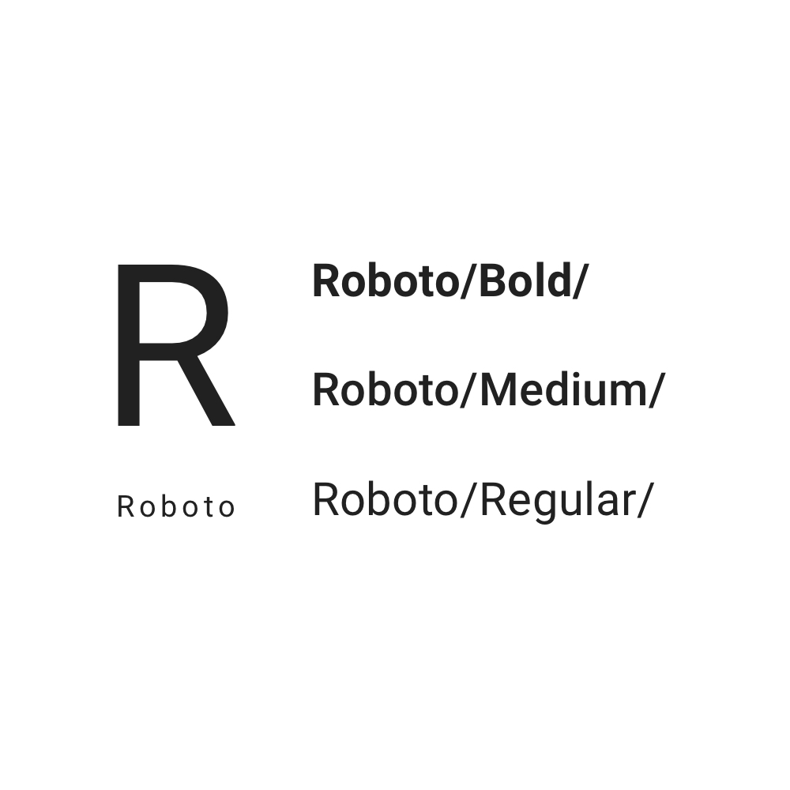

COMPARTO MI MALETA
Diseñé una aplicación mobile basándome en la plataforma web actual.
ClienteComparto mi maleta
RubroEnvíos internacionales
RolDiseñadora UX/UI
Problema
La plataforma web actualmente necesita brindar una experiencia más cómoda a sus clientes, obtener mayor visibilidad, usabilidad, etc.
Solución
Crear una aplicación mobile que se ajuste a las necesidades de sus clientes, poder traer sus compras fácilmente y también poder ser un viajero que trae compras desde el exterior.
Objetivo
Diseñar una aplicación en donde se puedan realizar las mismas funciones que actualmente se realizan en la plataforma web.
Comencé por recopilar información existente al mismo tiempo de mapear la experiencia ya que no existía un mapa de navegación.
Se descubrió que en la plataforma interactuan dos usuarios, por lo tanto realicé test de usuarios y entrevistas.
COMPRADORES que necesitan traer sus compras online desde el exterior.
VIAJEROS que ganan dinero trayendo las compras desde el exterior en su maleta, a la vez un cliente podría ser viajero si estuviera de viaje.
Con los wireframes se mapearon los flujos de la persona que realiza la compra (cliente) y de la persona que trae la compra al país (viajero). De esta forma se pudo visualizar los puntos en común y de contacto entre ellos, además de deconstruir desiciones de diseño.
ENTREVISTA AL USUARIO (CLIENTE)
Para conocer en más profundidad cómo interactúan los usuarios con la plataforma realicé algunas y acá muestro sólo algunas de ellas:
¿Cómo traes una compra desde el exterior?
Compro online y luego ingreso a comparto mi maleta para que me traigan mi compra.
¿Qué es lo que te cuesta realizar?
Me confundo cuando entro a mi cuenta y está la parte de viajero y comprador juntas, no entiendo dónde revisar las compras que tengo.
¿Cómo explicarías a otra persona que quiere traer una compra?
Le diría que tiene que comprar antes de ingresar a la página ya que para traer tu compra me piden los detalles de la compra ya realizada,etc.
EXPERIENCIA ACTUAL
Las pautas actuales de visualización de Comparto mi maleta reflejan la colorización desde el logotipo. Estos son algunos ejemplos visuales que me ayudaron a continuar con la exploración y calibración de estos colores.
LOGOTIPO
El logotipo está compuesto por el color verde y blanco que contrastan bien con el azul de fondo.
INICIO
Visualmente la página tiene un color que refleja la marca, pero, con algunos errores de contraste en botones y uso de texto y fondo por ejemplo.
Comparto Mi Maleta ofrece un servicio que envío de compras online,sin embargo, en la parte inicial se asume que el cliente ya realizó la compra y esto hace que sea confuso para nuevos clientes que ingresan desde algún link externo como publidad, etc. La mejora de la experiencia de usuario depende de:
Simplificar la comunicación al inicio y a lo largo de cada proceso.
Proporcionar un dashboard claro que evite la confusión de roles.
Reducir los tiempos de validación de documentos.
Optimizar colores, textos y tamaños.
Se realizaron bocetos y wireframes de las pantallas por secciones ó módulos de los flujos de esta forma se podrían realizar test por separado, las imágenes representan algunos bocetos de inicio y selección de local.
Comparto mi maleta ya tiene definida su paleta cromatica, lo que realicé para la aplicación fué calibrar los colores en base a las pautas de usabilidad y por lo tanto los colores cambiaron en algunos aspectos, por ejemplo en aplicaciones de fondo y textos, en saturaciones de color, etc.
COLOR
TIPOGRAFÍA
Estas son algunas de las pantallas finales.